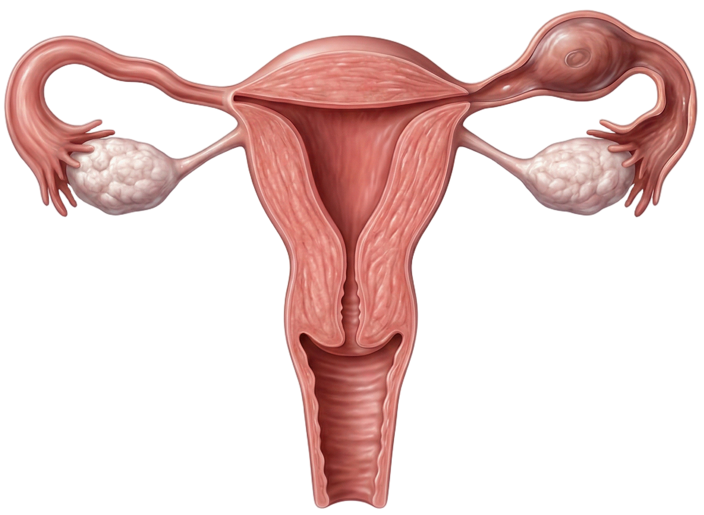

What Is an Ectopic Pregnancy?
A fertilized egg implants outside the uterus. Most common site: fallopian tube ampulla (~95%). Cannot sustain normal fetal development → life-threatening rupture if undetected.
| Implantation Site | Frequency | Risk of Rupture |
|---|---|---|
| Fallopian Tube (Ampulla) | ~70% | High — ruptures at 6–10 weeks |
| Fallopian Tube (Isthmus) | ~12% | Very high — ruptures early (smaller tube) |
| Fallopian Tube (Fimbria) | ~11% | Moderate |
| Ovarian | ~3% | Moderate |
| Abdominal/Cervical/Interstitial | <3% | Highest — can lead to massive hemorrhage |


Risk Factors
| Risk Factor | Why It Increases Risk |
|---|---|
| Previous ectopic pregnancy | Scarred tube → impaired egg transport; #1 risk factor |
| PID / Salpingitis | Scarring and adhesions in fallopian tubes block normal transport |
| Previous pelvic/tubal surgery | Adhesions → narrowed tube lumen |
| Tubal ligation failure | Damaged tube anatomy → ectopic implantation |
| IUD in place | IUD prevents uterine implantation but not always ectopic |
| Endometriosis | Adhesions alter tubal anatomy |
| Smoking | Impairs tubal motility (cilia movement) |
| Assisted reproductive technology (ART) | Embryo transfer can result in tubal implantation |
Clinical Presentation
Classic Triad (Early / Unruptured)
| Sign | Details |
|---|---|
| Amenorrhea | Missed period (6–8 weeks); positive pregnancy test |
| Unilateral pelvic/abdominal pain | Dull, crampy or sharp — one sided; worsens as tube distends |
| Vaginal bleeding | Abnormal spotting or light bleeding (NOT normal period flow) |
Signs of Rupture (Surgical Emergency)
🚨 RUPTURED ECTOPIC = SURGICAL EMERGENCY
| Sudden, severe, sharp lower abdominal pain |
| Shoulder pain (Kehr's sign) — referred pain from diaphragm irritation by blood pooling |
| Syncope or near-syncope (hemorrhage → hypotension) |
| Signs of shock: ↓BP, ↑HR, pallor, diaphoresis, cold clammy skin |
| Rigid/board-like abdomen — peritoneal irritation from internal bleeding |
| Cullen's sign — periumbilical bruising (intraabdominal hemorrhage) |
Diagnosis
| Test | Finding |
|---|---|
| Urine/Serum β-hCG | Positive (confirms pregnancy); in ectopic, β-hCG rises slower than normal (<66% rise in 48h is suspicious) |
| Transvaginal Ultrasound (TVUS) | No intrauterine gestational sac + adnexal mass = ectopic until proven otherwise; gold standard for diagnosis |
| Culdocentesis | Blood in cul-de-sac via posterior fornix needle → indicates internal bleeding (less used today) |
| CBC | Falling hematocrit with rupture; may be normal early on |
NCLEX Key: β-hCG Discriminatory Zone
- Normal IUP: β-hCG doubles (~66%) every 48 hours in early pregnancy
- Ectopic or failed pregnancy: β-hCG rises <66% or plateaus
- β-hCG >1,500–2,000 mIU/mL with NO intrauterine sac on TVUS = high suspicion for ectopic
Medical
Surgical (tube-sparing)
Surgical (definitive)
⚠️ Nursing Priorities
- Report sudden increase in pain + shoulder pain immediately → signs of rupture
- Establish large-bore IV access; prepare for emergency surgery
- Monitor vital signs frequently for shock (↓BP, ↑HR)
- Check Rh status → give RhoGAM if Rh-negative
- Patient teaching for MTX: no NSAIDs (interfere with MTX), no folic acid, avoid sun, no intercourse until resolved
- Grief support — loss of pregnancy; refer to counseling
NCLEX Priority Summary
| Scenario | First Action |
|---|---|
| Patient 7 weeks pregnant with sudden sharp one-sided pelvic pain + shoulder pain | Assess VS immediately; call provider — suspect ruptured ectopic; prepare for OR |
| Patient on methotrexate asks if she can take ibuprofen for pain | No — NSAIDs interfere with methotrexate and mask symptoms; give acetaminophen if needed |
| Patient asks when she can try to get pregnant after MTX | Wait at least 3 months after methotrexate (folic acid antagonist can cause birth defects) |
| Rh-negative patient with ectopic pregnancy | Administer RhoGAM (Rho immune globulin) to prevent sensitization |
Ectopic Pregnancy — Practice Quiz
Implantation sites, risk factors, rupture signs, diagnosis, and NCLEX priorities.
Question
—
Round Complete!